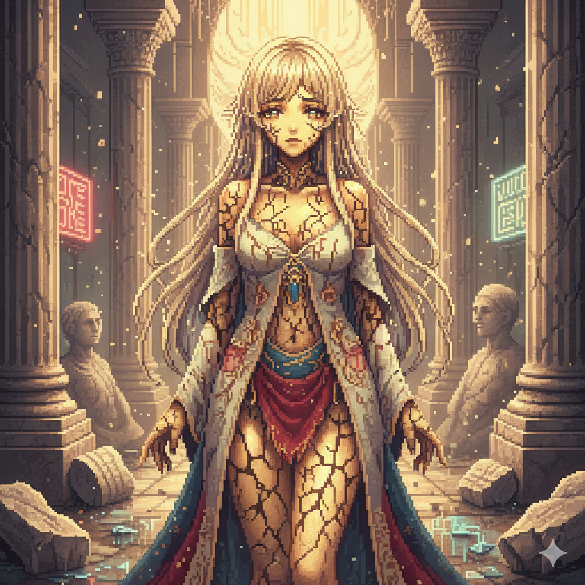
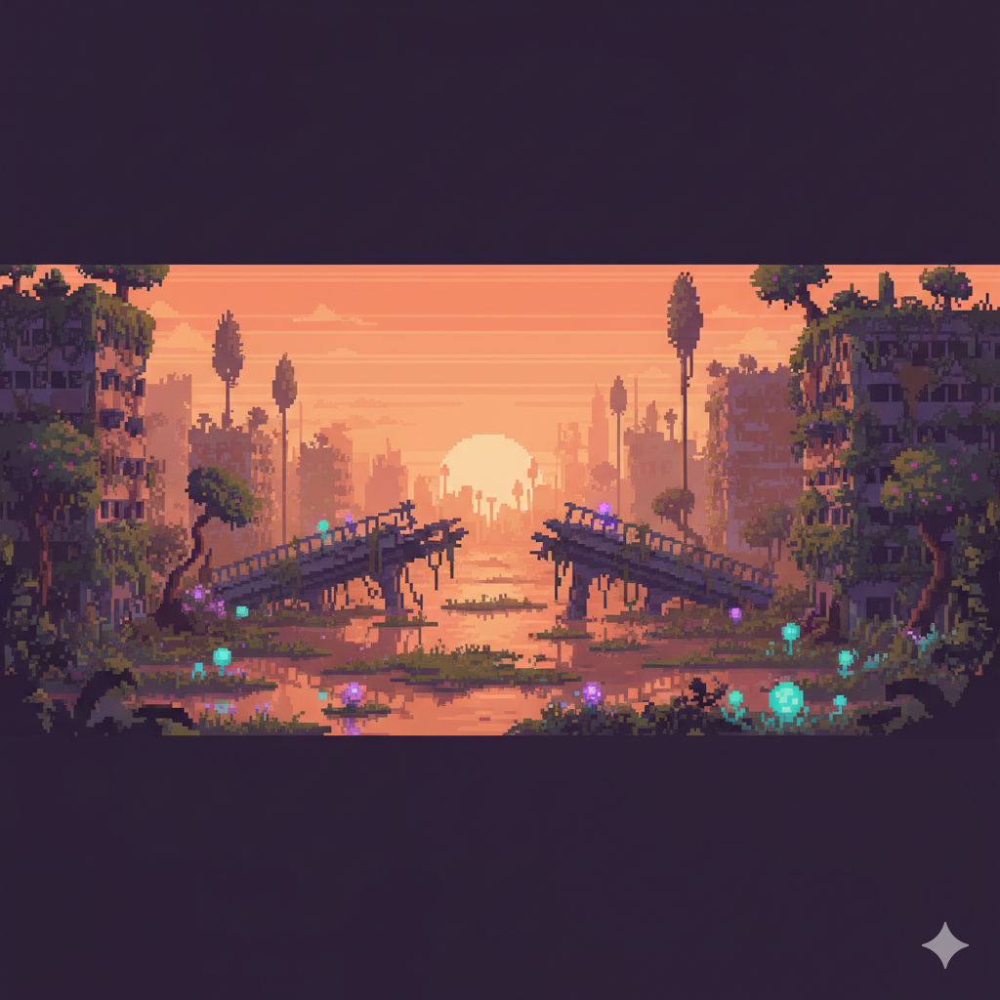
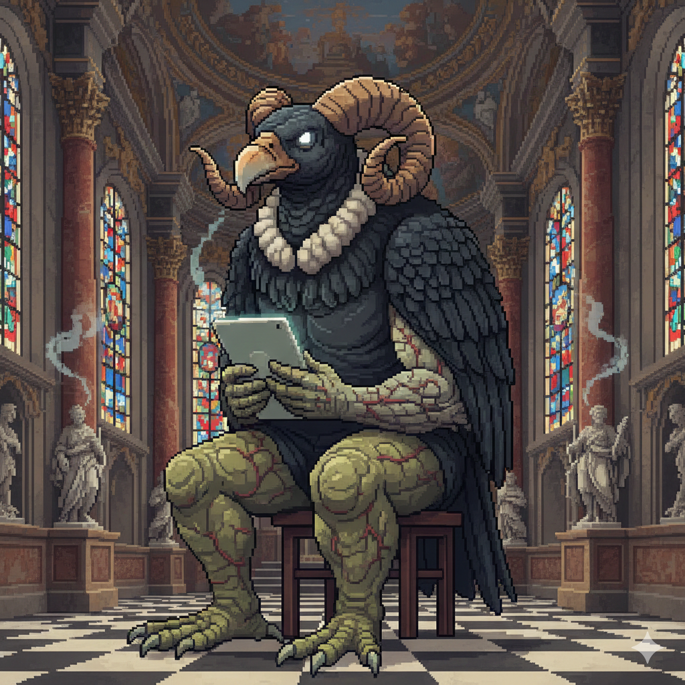
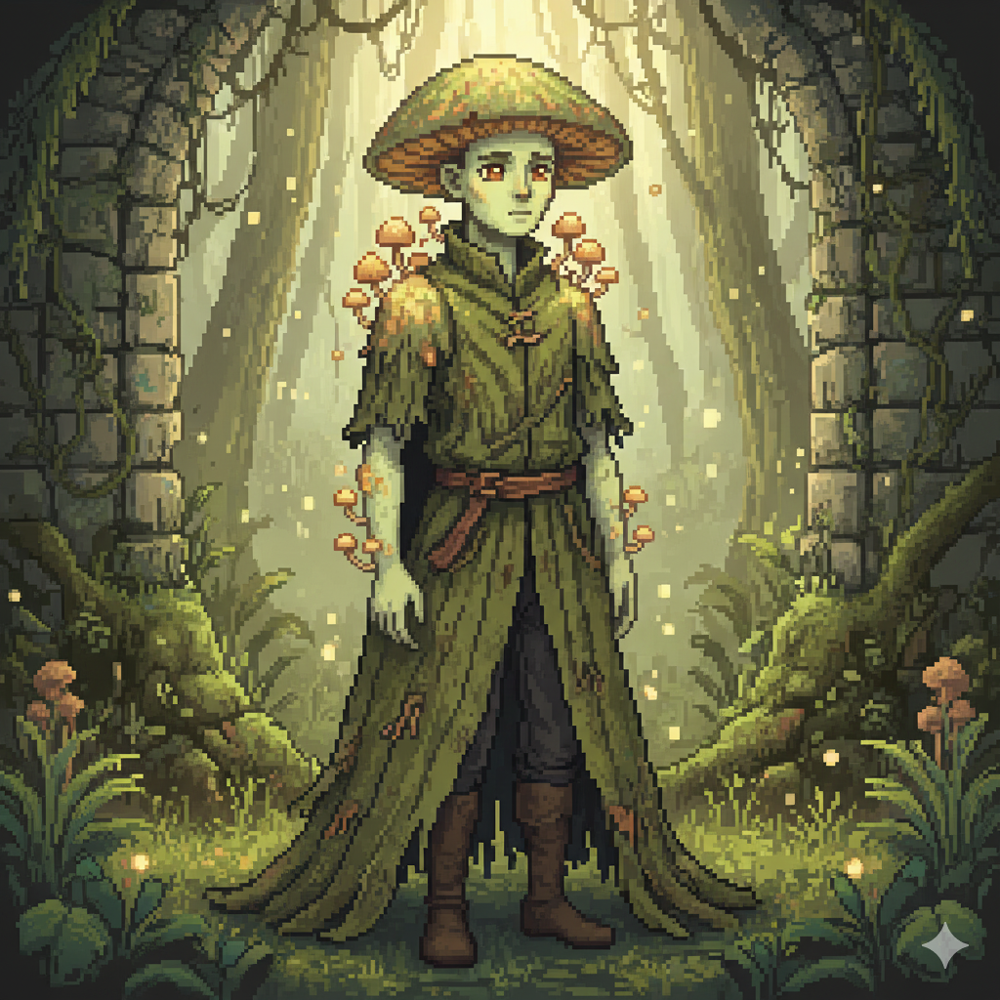
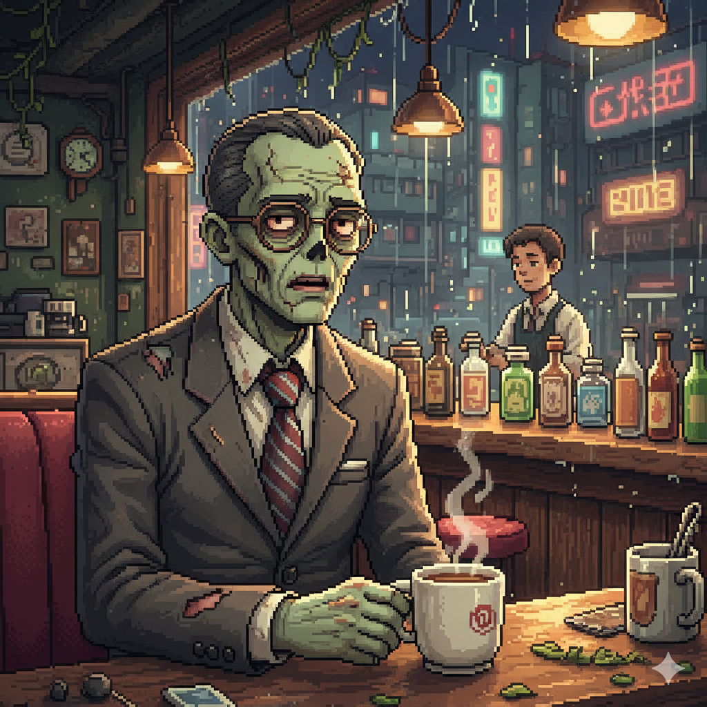

Durmientes
Meses bajo cielos quemados activaron una luminiscencia en su piel...

Cuando el valor de cambio superó al valor de uso y el respeto por la vida dejó de existir, el clima se quebró: olas de calor, lluvias ácidas y mareas altas reescribieron los mapas, los continentes y el mundo conocido. Las ciudades latinoamericanas quedaron cubiertas de sal, moho y enredaderas.
La producción se detuvo; la vida, como siempre, se negó a hacerlo. De lo humano y lo no humano nacieron cuatro líneas de supervivencia: seres mutados que cambiaron por fuera, pero conservaron por dentro la memoria de cómo habitaron el mundo antes del colapso. Elige cómo empezarás.
Cuatro formas de sobrevivir después del colapso.

Meses bajo cielos quemados activaron una luminiscencia en su piel...

De los derrumbes surgieron cuerpos hechos de fibras, telas, metales...

Las lluvias ácidas abrieron paso al micelio...

El destino de muchos seres humanos, tras el primer apagón global...
Elige uno para continuar…